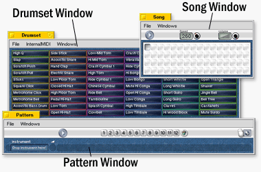

PecoBeatPecoBeat is the main program. When you start it, you get three windows: The windows have specific functions which are described subsequent in detail. Anyhow the menus of the individual windows are very similar: You have functions to load (Open...) and save (Save, Save as...) the current song, create a new song (New) and get information about the program (About...). You can also control the windows in the Windows menu and move the whole program to another workspace - which is a very handy function! In the Drumset Window you have also some functions to control InternalMIDI (find out more about it on page 1). | ||
| ||